Your browser does NOT support to play this presentation.
Softwaregestütztes Projektmanagement
Eine Präsentation von
Dennis Detering, Sven Gebhardt und Timo Josten
Inhaltsverzeichnis
- Definition Projektmanagement
- Softwarelösungen
- JIRA (Atlassian)
- Basecamp (37signals)
» In cursus volutpat ante, sit amet adipiscing enim ullamcorper nec. Pellentesque eget ipsum dui. Morbi sit amet orci non turpis ullamcorper semper. Integer elit nisi. «
»JIRA is a project tracking tool for teams building great software. «
Projektmanagement
Bug-Tracking
Versionsverwaltung
Workflows
Berichte & Analysen
Erweiterungen
Projektmanagement
Das Projekt bezeichnet ein konkretes Vorhaben, an dem verschiedene Stakeholder beteidigt sind.
- Operativ: z.B. Delegation von Aufgaben
- Analytisch: z.B. Zeiterfassung
- Wichtige Stichworte:
- Tickets
- Milestones
- Releases
Bug-Tracking
Als Ticket versteht man die elektronische Form eines Anliegens, z.B. eine Störung, eine Service-Anfrage oder eine spezifische Aufgabe.
- Anlegen, Verwalten und Beobachten von «Tickets»
- Delegation von Verantwortung
- Arbeitsprozesse transparent bearbeiten
- Historie eines Falles nachvollziehbar speichern
- ggf. Kommunikation mit Kunden
Versionsverwaltung
- Nahtlose Integration der Projektverwaltungs- in die Versionskontrollsoftware
- z.B. Zuweisung verschiedener VCS-Commits zu einem JIRA-Ticket
JIRA-Ticket #123
Fehler beim Anlegen neuer Kunden
#6f43ea: Updating SQL Stmt. (JIRA #123)
#52bca3: Updating Template (JIRA #123)
#ae2341: Updating Module (JIRA #123)
Workflows
Workflows (Arbeits-/Prozessabläufe) bilden Abläufe innerhalb der Software ab, die für bestimmte
Benutzer oder Benutzergruppen eingerichtet werden können.
Berichte & Analysen
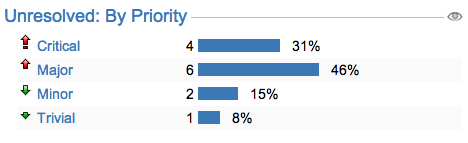
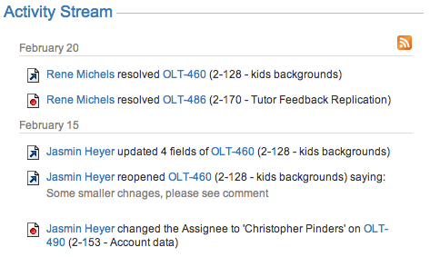
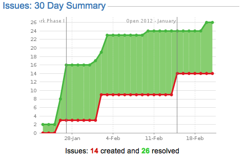
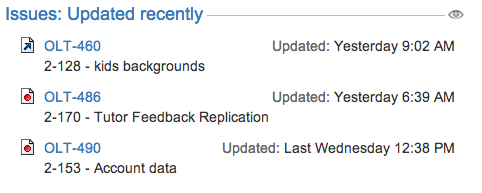
Erweiterungen
http://developer.atlassian.com
- Atlassian Marketplace / Plugin Exchange
- Für Entwickler:
- Eigene Erweiterungen entwickeln und auf dem Atlassian Marketplace verkaufen
- Für Endkunden:
- Unter zahlreichen verfügbaren (und teilweise kostenlosen) Erweiterungen auswählen und die eigene JIRA-Installation nach Wünschen und Anforderungen anpassen
Showcase
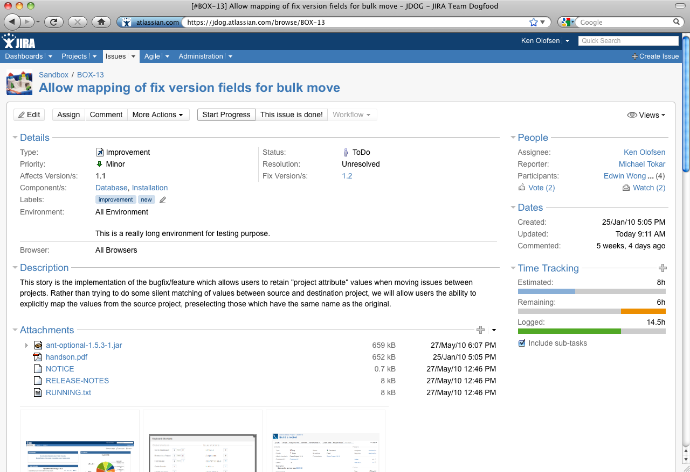
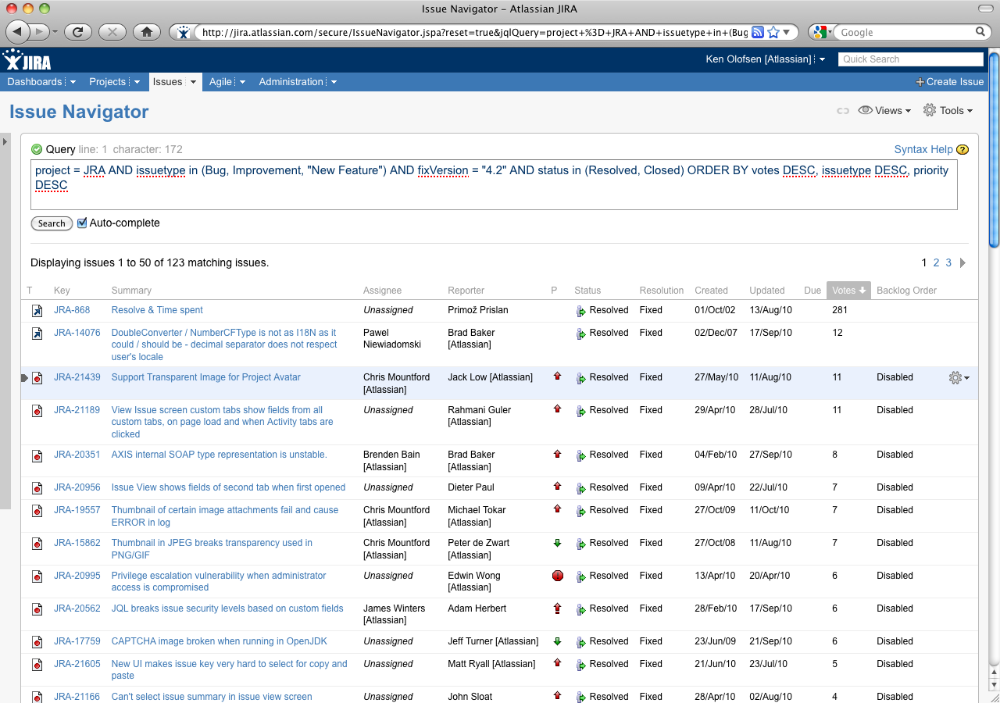
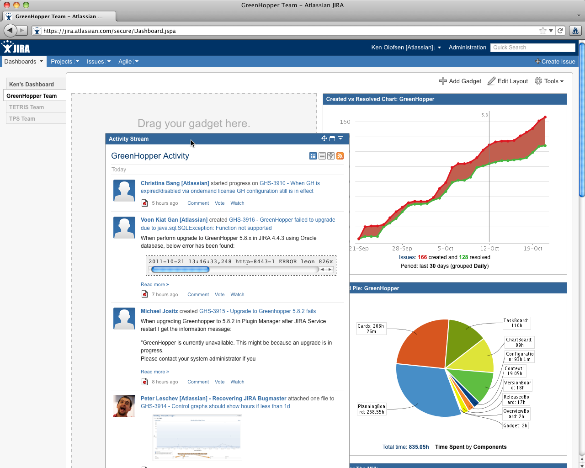
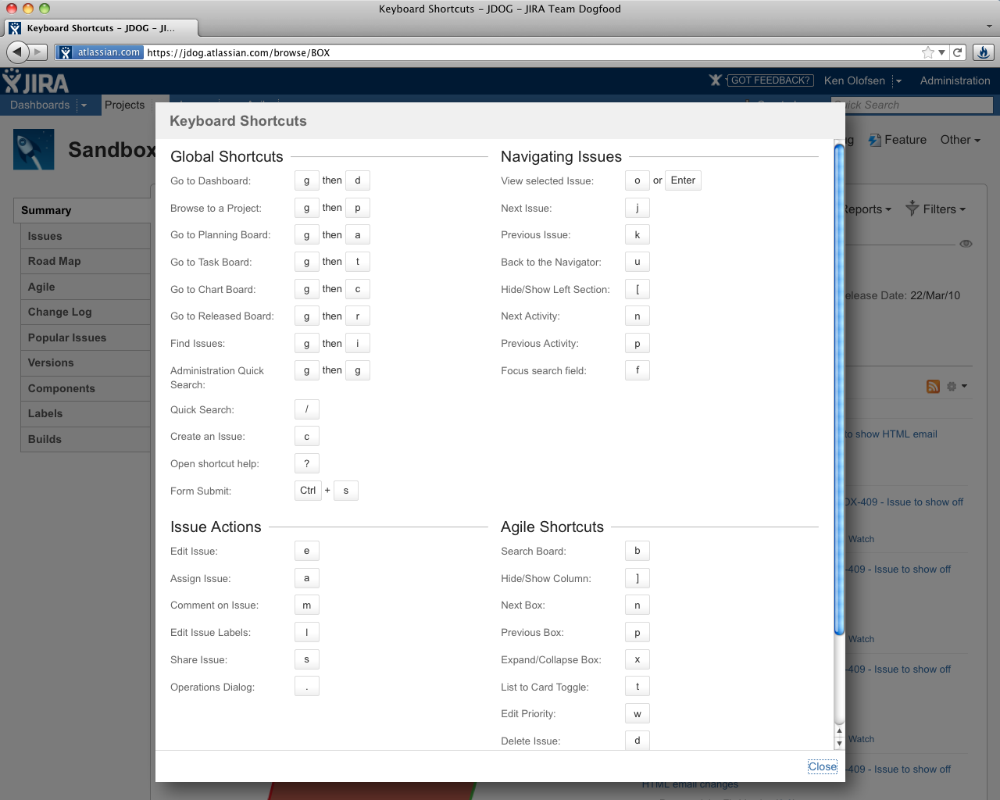
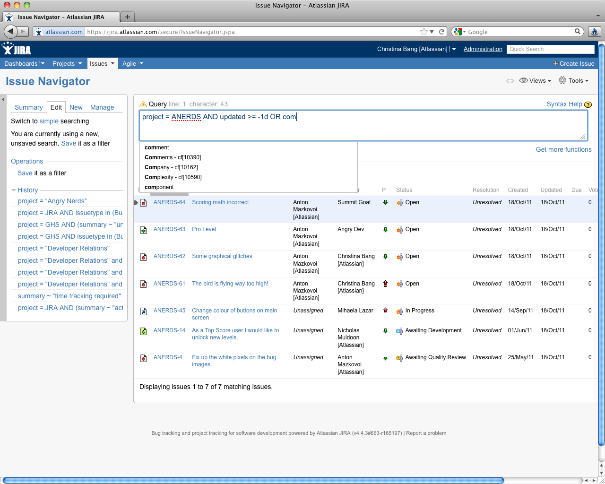
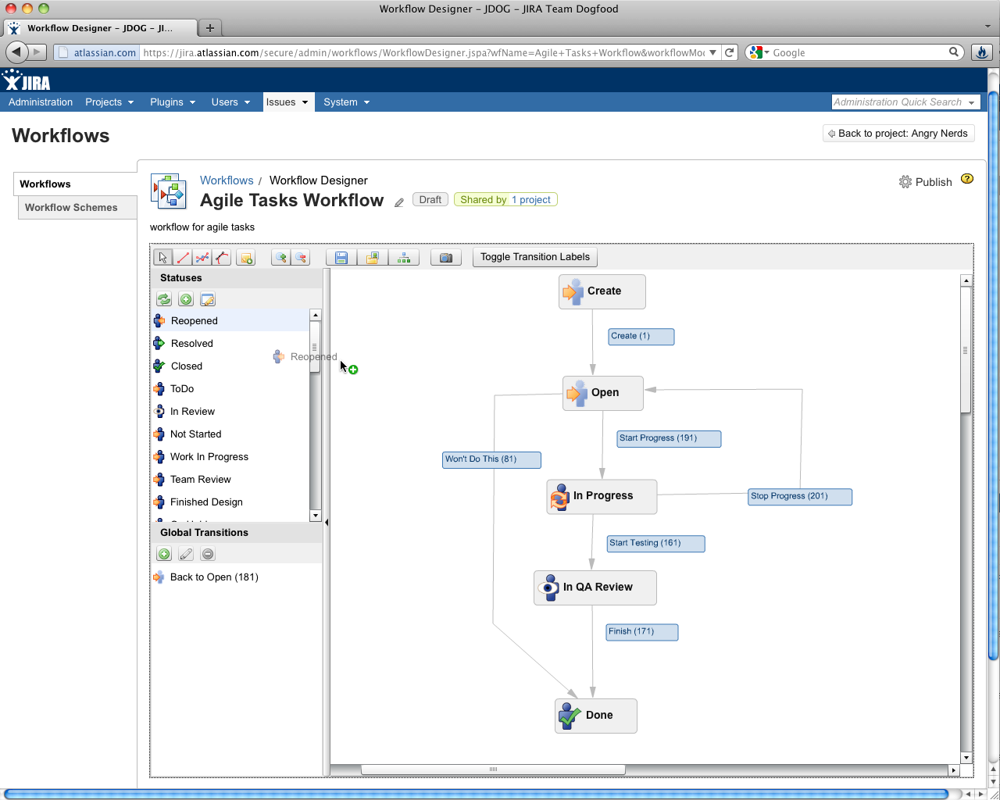
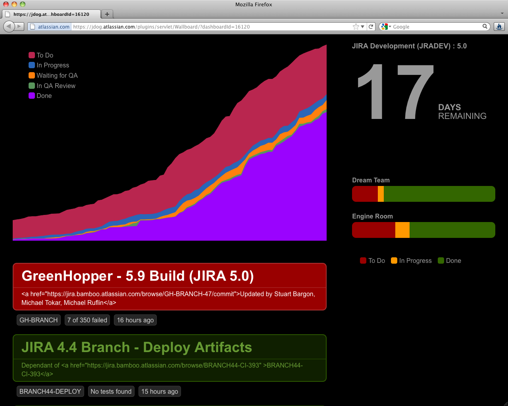
BASECAMP
»Projects go well when people talk to each other, discuss issues openly, and communicate clearly. Basecamp is focused on making this easy.«
over 7 million people wordwide
over 4 million projects
57 million hours of work tracked
46 million files shared
43 million to-dos completed
Shooting some facts
- 5. Februar 2004
- Webbasiert
- Software as a Service
- Multilingual
- Add-Ons
Die Lizenzmodelle
- free plan:
1 Projekt anlegbar, 10MB Speicherplatz für Dateien
- basic plan:
15 Projekte, 5GB Speicherplatz ($24/Monat)
- plus:
35 Projekte, 15GB Speicherplatz, unbegrenzte Benutzer anlegbar ($49/Monat)
- premium:
100 Projekte, 30GB Speicherplatz, unbegrenzte Benutzer ($99/Monat)
- max:
unbegrenzte Projekte, 75GB Speicherplatz, unbegrenzte Benutzer ($149/Monat)
To-Do-Listen
Milestones
Stundenerfassung
Filesharing
Writeboards
Templating
To-Do-Listen
- Mehrere To-Do-Listen
- Mitarbeiter-Zuweisung
- Deadline
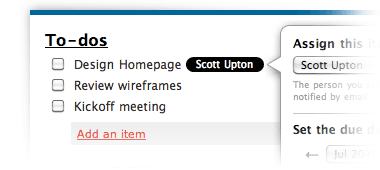

Milestone-Management
- Termine
- Milestones
- Deadlines
- Mitarbeiter-Zuweisung
- Synchronisation
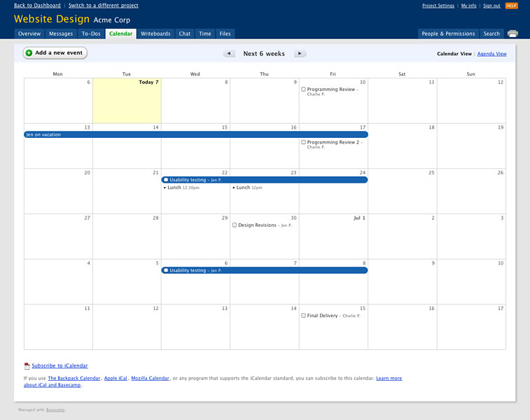
Stundenerfassung
- Arbeitszeit pro Aufgabe
- Verknüpfung mit To-Do
- Umfangreiche Filter
- Exportierung
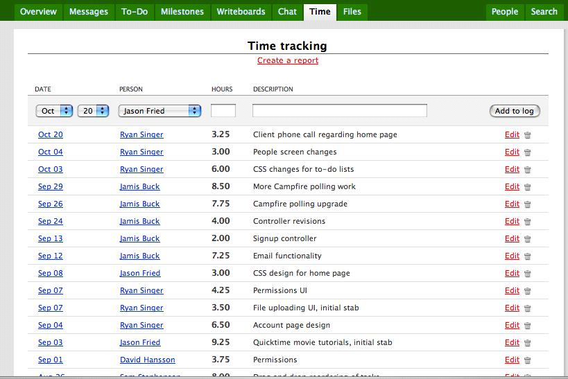
Filesharing
- Alle populären Formate
- Versionierung
- Kategorien
- Zugriffskontrolle
- Filter
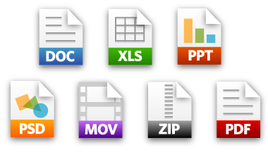
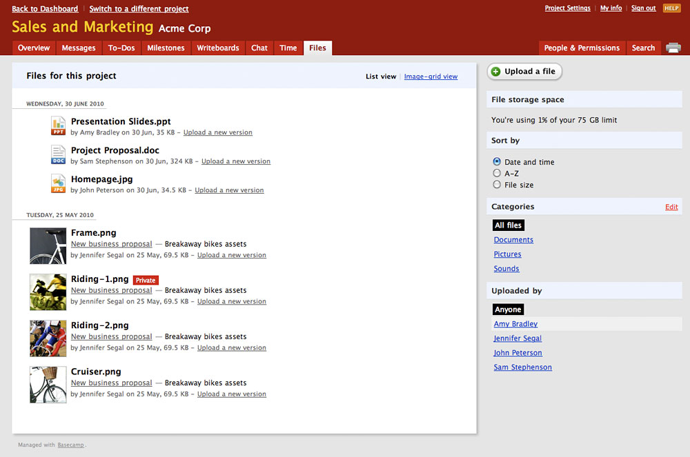
Writeboards
- Synchrones Arbeiten
- Versionierung
- Vergleich
- Kommentieren
- Exportierung
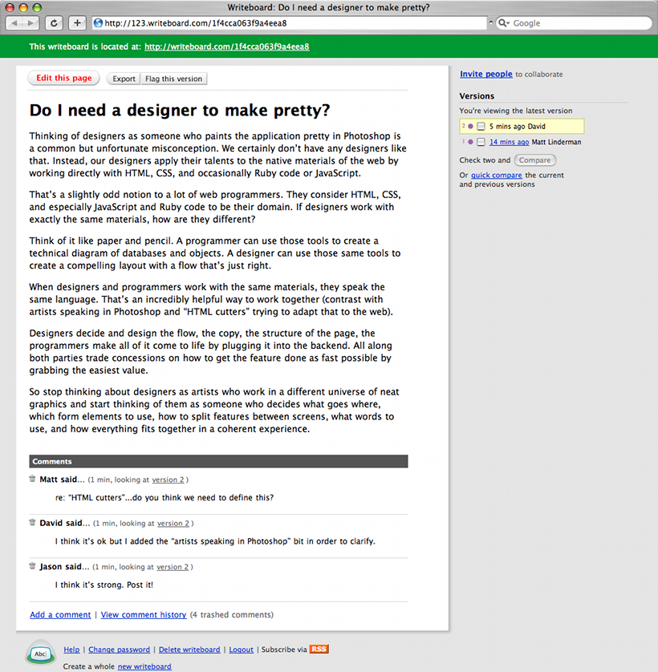
Templating
- Erstellung von Templates
- To-Dos
- Milestones
- Nachrichten
- ...
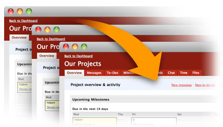

Dashboard
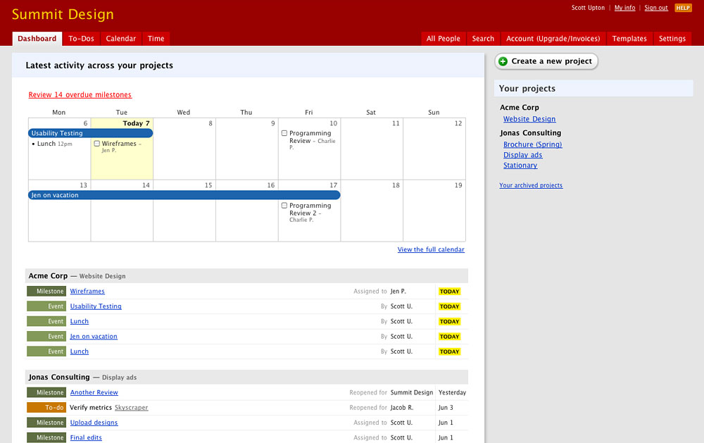
Thanks for your attention!